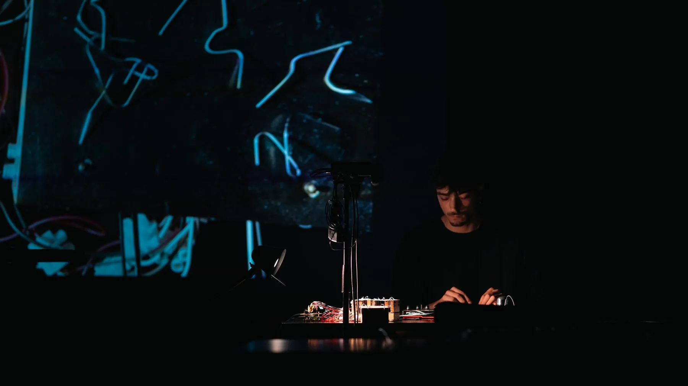
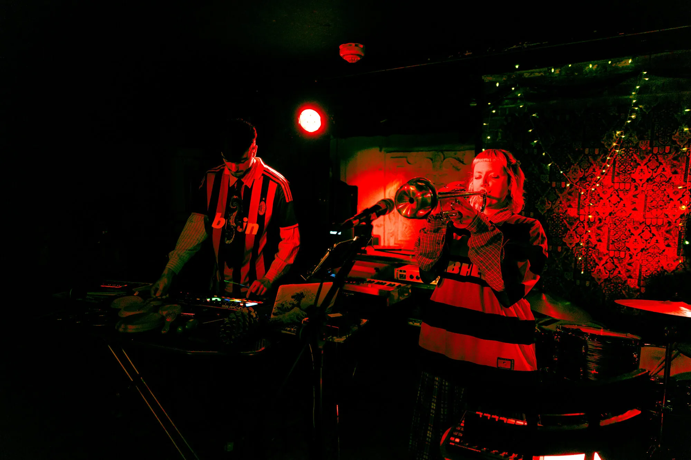
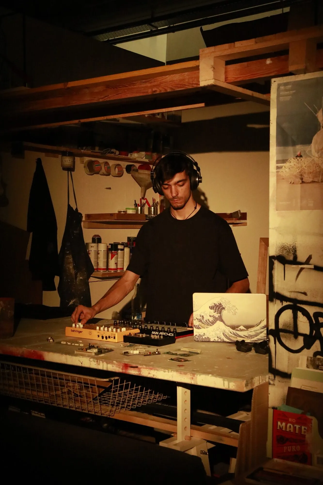
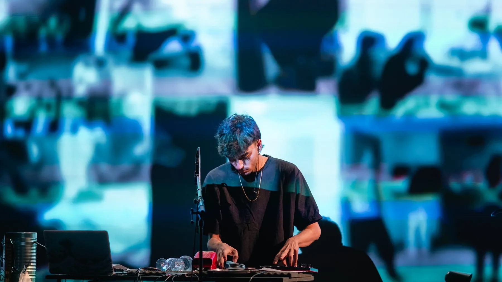
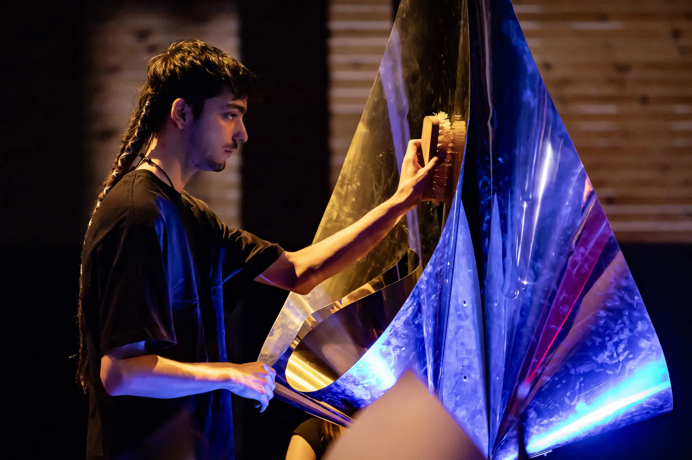
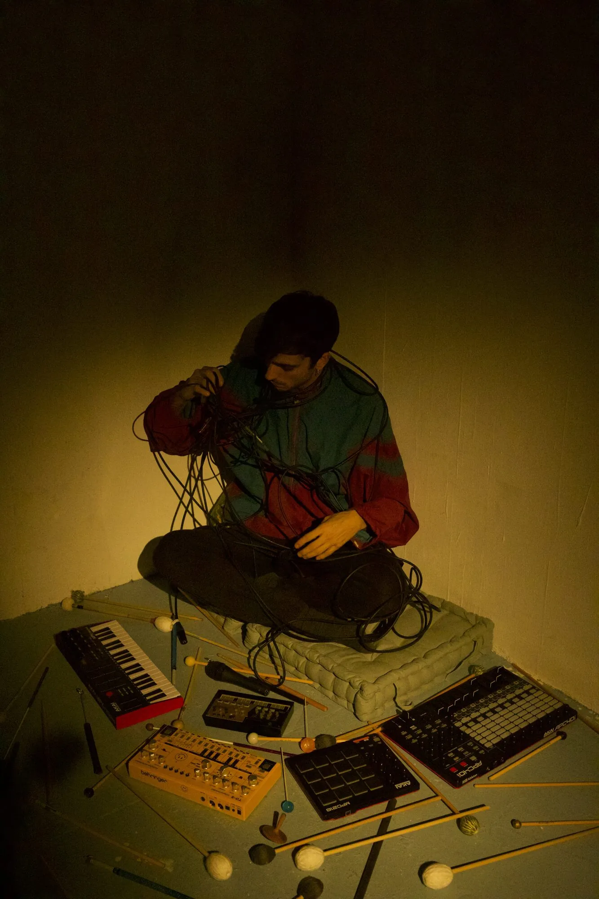
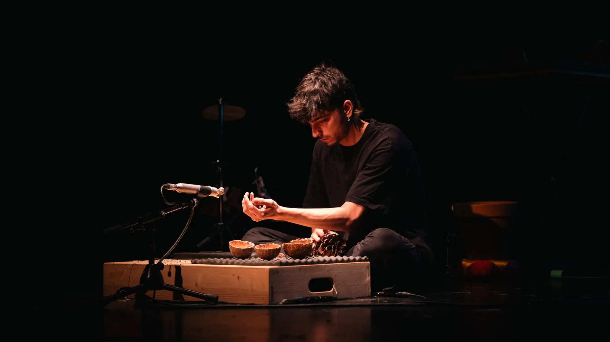
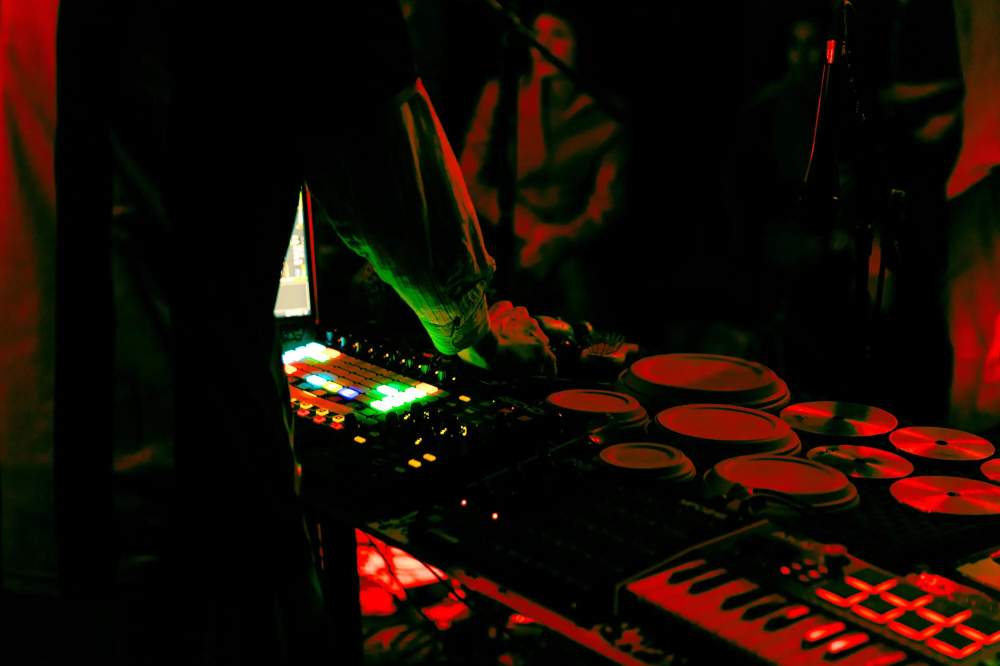
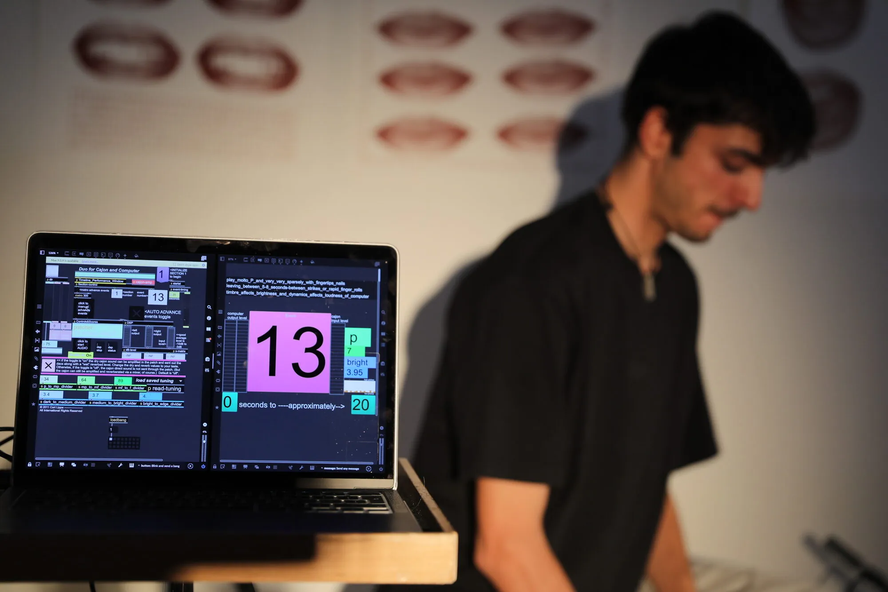
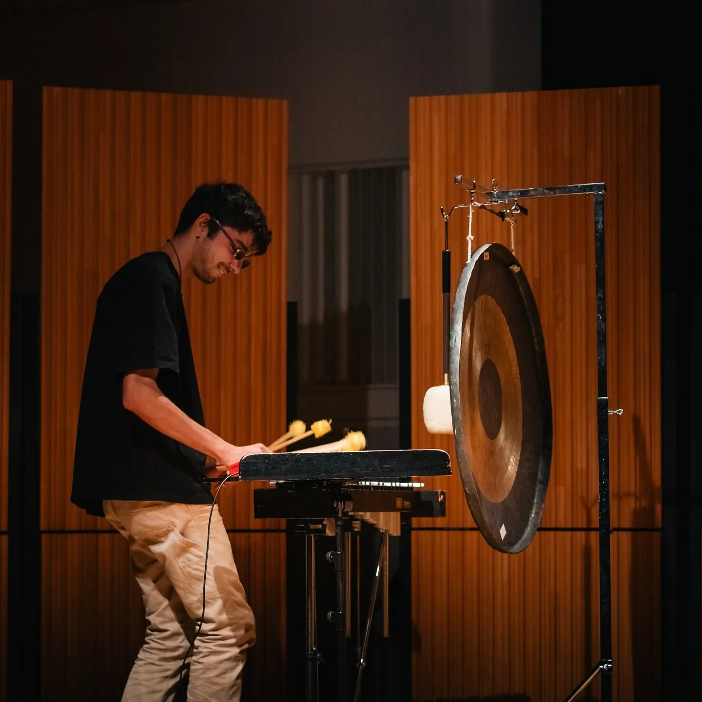
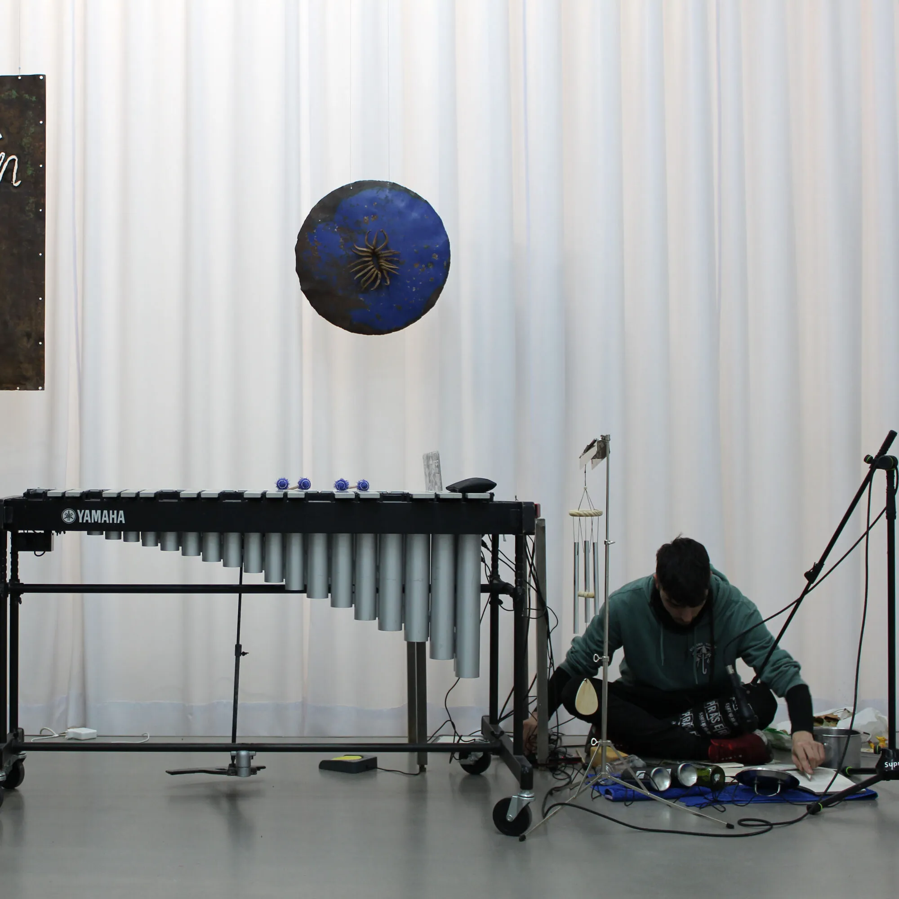
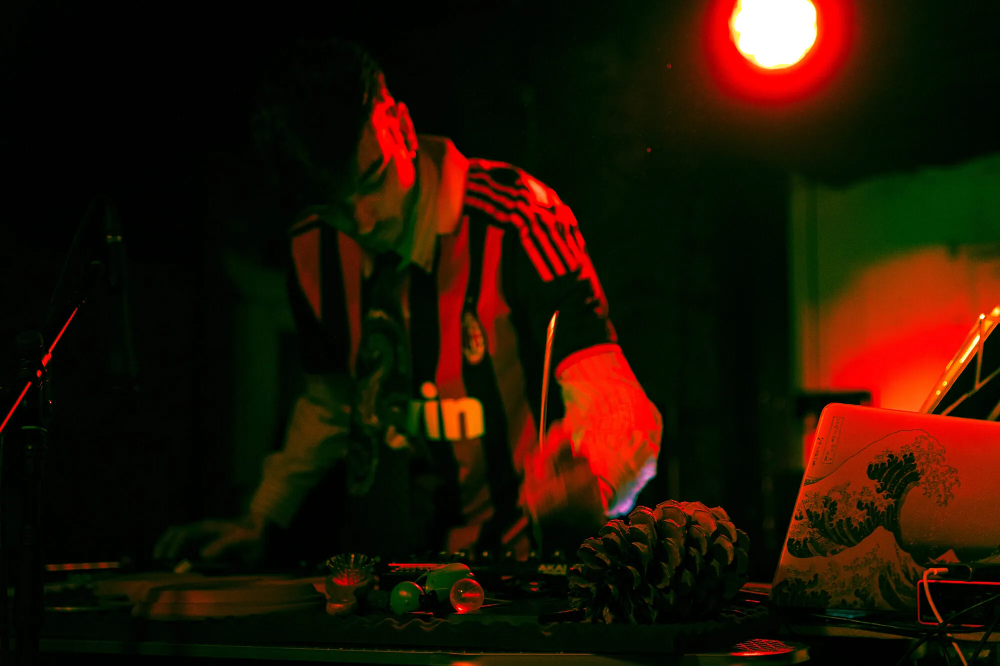
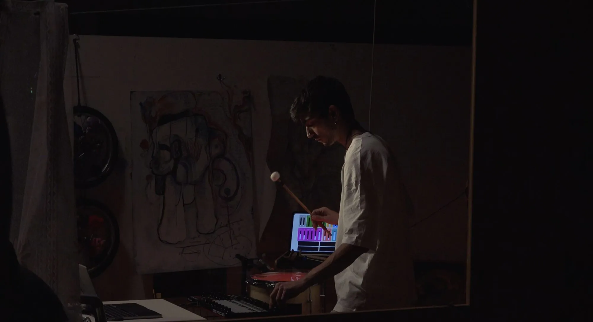
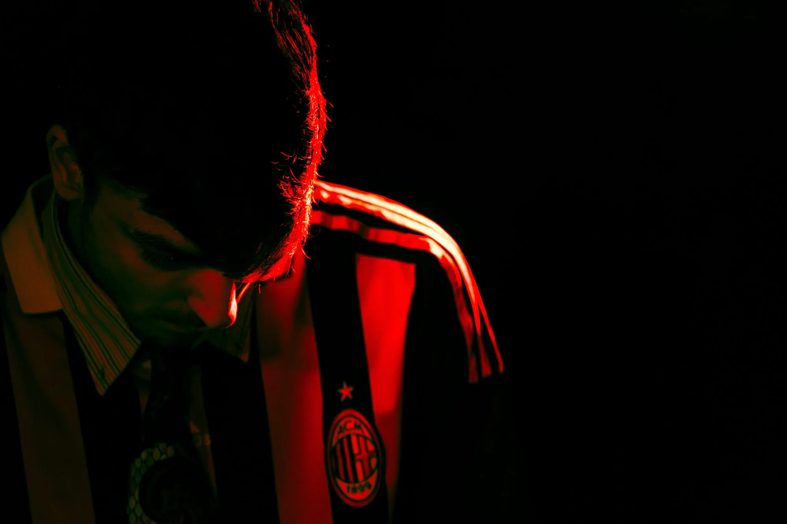
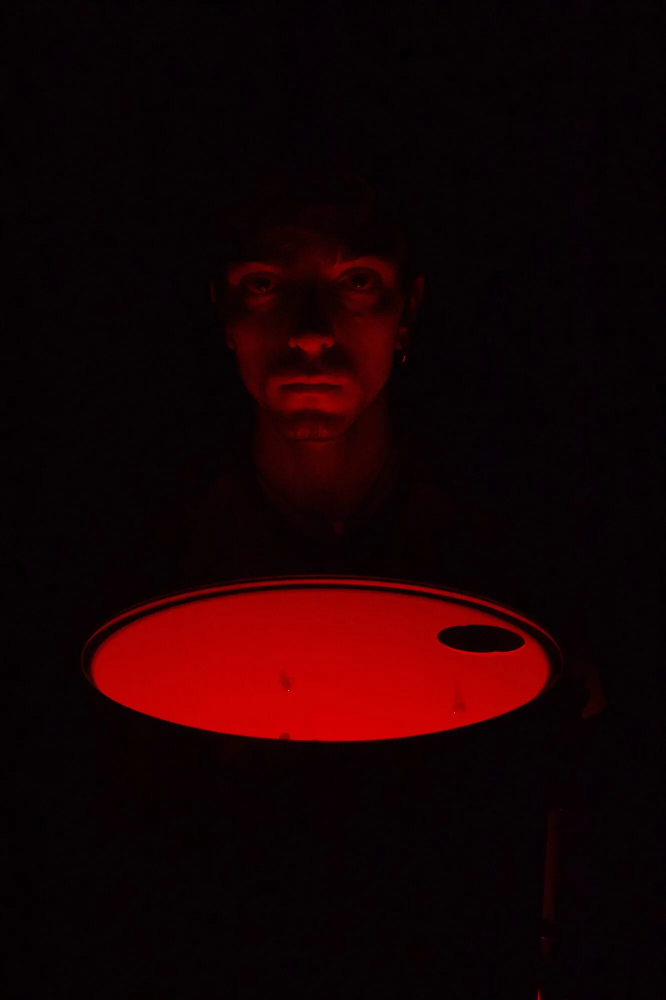
A piece for tom, pedal and MIDI controller inspired by John Cage's ideas of indeterminacy and performer agency. The electronic system introduces controlled unpredictability, allowing the performer to influence the structure and evolution of the piece in real time.
For vibraphone and electronics, inspired by Stockhausen's Mantra and its use of ring modulation. The idea is translated to the vibraphone, exploring how modulation can transform the instrument's sound and harmonic character.
Coming from a classical percussion background, my first explorations with electronics emerged through tape in relation to existing repertoire: a fixed-media track for Elliott Carter's Figment V underlining its metric modulations, and another over the Sarabande and its Double from Bach's Partita No. 1 for solo violin, where the dance and its double sound at once and answer each other (from 1:46).
A hybrid setup combining percussion and live electronics: percussion instruments, MIDI controllers and custom Max for Live devices interacting through live processing in Ableton. It has become a central tool in my practice, used both for improvisation and across other projects, and I keep expanding it as I learn new tools.
A duo with trumpet player Carmen Llena focused on experimental performance and improvisation. The project moves between composed material and open forms, letting sound emerge through interaction and listening. Drawing from contemporary music, improvisation and jazz, we use live electronics to expand the acoustic instruments and allow real-time transformations.
I am a co-founder of the sound-creation collective Páramo 26005, together with Adrián Fuentes and Juls Ruiz. Within the project I perform as a musician and contribute to the compositional development of the pieces, as well as to the sonic conception of the work and the integration of live electronics.
A duo focused on free improvisation, working with my hybrid percussion and electronics setup and Tibor's modular synthesis system, generally moving towards slower, atmospheric and drone-oriented sound worlds. We also created SoL, a performance project combining sound, light and distorted visual imagery.
Álvaro Ayuso (Logroño, 2000) is a percussionist and sound artist based in Bern. His work starts from acoustic percussion and extends into live electronics and installation, combining digital tools, circuits and self-built devices as though they were a single instrument. He is drawn to sound at an almost physical level: how it is generated and what can be altered from within. Drawing on the memory and landscape of the rural surroundings he comes from, he builds his own programmes, writing the music and, at times, making the instruments. Piñas, platos y patches and El silencio de Valvanera are two of them.
He has worked with the ensemble Frames Percussion and with composers including Magnus Lindberg, Matthew Shlomowitz and Gary Berger; he has premiered works by Altin Volaj, María Amor, Tibor Kovács and Yido Chae, and has taken part as a performer in two editions of the Joan Guinjoan International Composition Prize. He has played at festivals such as Festival Actual (Logroño) and Les Jardins Musicaux (Cernier), and in venues such as the Teatre Nacional de Catalunya (Barcelona) and the Troubadour (London). His projects include Páramo 26005, a collective he co-founded that works with open scores, the percussion collective Percu-Rioja, the duo Marianito Rojo with trumpeter Carmen Llena, and a free improvisation duo with composer Tibor Kovács. He trained at ESMUC in Barcelona and completed a Master in Percussion Performance at the Hochschule der Künste Bern, where he is now pursuing a second Master in Contemporary Arts Practice. He is a recipient of the Albert Hänggi Scholarship and of the Beca Inicia of the Logroño City Council.
Álvaro Ayuso (Logroño, 2000) is a percussionist and sound artist based in Bern. His work starts from acoustic percussion and extends into live electronics and installation, combining digital tools, circuits and devices he builds himself as though they were a single instrument. He is drawn to sound at an almost physical level: how it is generated, what happens inside it and what can be altered from within. But material alone is not enough for him. His projects draw on the memory and landscape of the village he comes from, and use built objects and video so that the piece tells something as well as sounding.
Out of this come programmes he builds from end to end, writing the music and at times making the instruments. Piñas, platos y patches traces different forms of relationship between human beings and technology, from pine cones and acorn cups to digital synthesis, with works commissioned for the project and one of his own, SaintLeo, for percussion, live electronics and video. Along the same lines, in November he premieres El silencio de Valvanera, a concert-performance on the history and traditional crafts of La Rioja, for which he received the Beca Inicia of the Logroño City Council.
He has worked with the ensemble Frames Percussion (Barcelona) and with composers including Magnus Lindberg, Matthew Shlomowitz, Gary Berger and Luis Tabuenca. He has premiered works by Altin Volaj, María Amor, Tibor Kovács, Lluís Pérez Villegas and Yido Chae, and has taken part as a member of the ensemble in two editions of the Joan Guinjoan International Composition Prize. He also writes the electronics for other composers' pieces, such as Altin Volaj's Echoes of the Past, and composed the theme music for the podcast Invertebrados.
Free improvisation takes up much of his work: with trumpeter Carmen Llena he forms the duo Marianito Rojo, and with composer Tibor Kovács a duo of hybrid percussion and modular synthesis moving towards slow, drone-like textures. He co-founded Páramo 26005, a collective that works with open scores, and is part of the percussion collective Percu-Rioja. He also develops Desmayus, a personal live-looping project blending techno, hip-hop and flamenco, and plays percussion in Vivace, a traditional music group from La Rioja.
He has played at festivals and events including Festival Actual, Festival Barullo and Nos Vamos de Pira (Logroño), the Ágora International Percussion Festival (Jávea), Forum3's Kolumbianische Nacht and the 4th Berner Beratungstagung at the BFH (Bern), À la pièce Dance Festival (Biel) and Les Jardins Musicaux (Cernier); and in venues such as the Palau de la Música Catalana, the Teatre Nacional de Catalunya and the Fundació Antoni Tàpies (Barcelona), La Lonja Art Gallery (Logroño), La Guarida (Bern) and the Troubadour (London).
He studied at the Escola Superior de Música de Catalunya (ESMUC) under Miquel Bernat and completed a Master in Percussion Performance at the Hochschule der Künste Bern (HKB) under Brian Archinal; he is currently pursuing a second Master in Contemporary Arts Practice at the same institution, specialising in sound arts. He is a member of PAKT Bern, the city's new music network, and a recipient of the Albert Hänggi Foundation Scholarship.
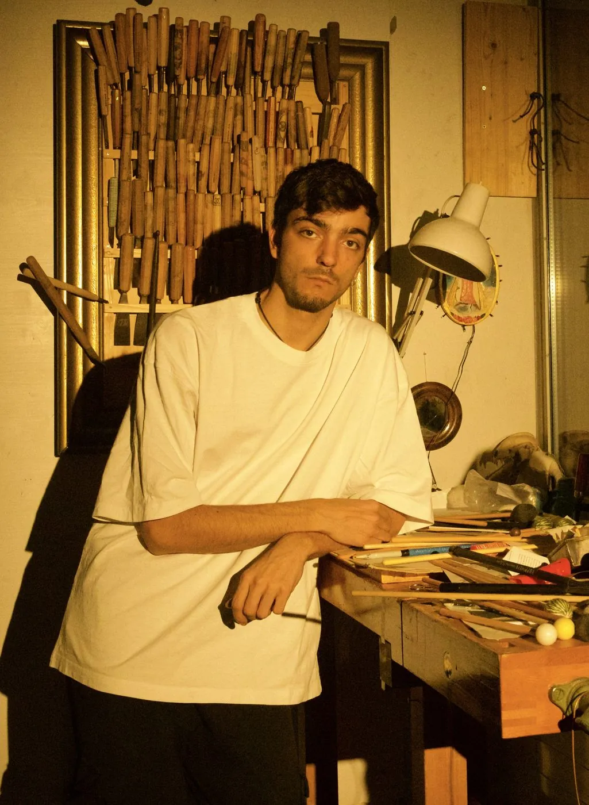